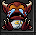
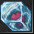
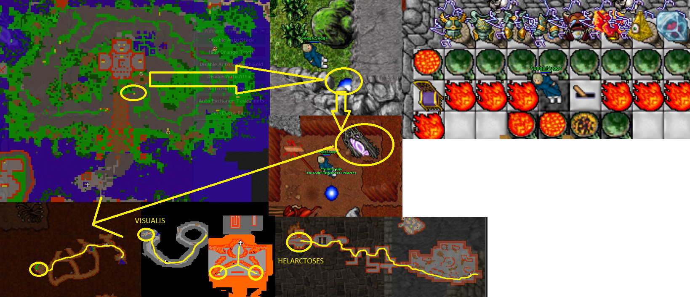

Fallen gods set to Helarctos set upgrade
Also known as: Helarctos quest
Requirements:
Fallen gods set
Morgaroth Baby
 Phoenix statue
Phoenix statue
 Illuminati
Illuminati
Frozen heart
This quest is quite straight forward. It is mostly following the path down to an another. This requires opening the gates of Fallen gods, it is instructed on Draconian set to gods upgrade quest. The teleport is before the palace to the right. Go through the different looking portal door to enter the quest area.
Follow your way straight up to the tower. Eventually you’ll get teleported to underground place. Follow the path just forward. Here monster are such as holy dark wizards, orshabaals, wizard of visualis and helarctoses at the end of the quest.
